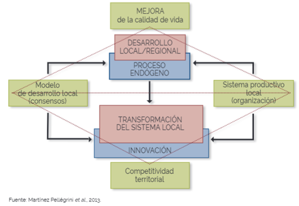
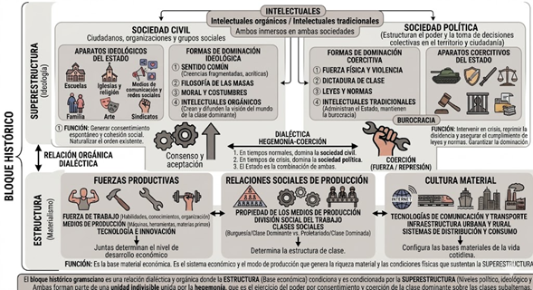

Marco Teórico
Dinámica Industrial
Geopolítica
Contexto Espacial
La comprensión de la dinámica industrial exige integrar dimensiones políticas y
espaciales. El Estado debe reconfigurarse mediante procesos de re-escalamiento para
adaptar el territorio al capital global, transitando de la homogeneidad nacional a la
competitividad de regiones urbanas, respondiendo a la transición tecnológica y evitando
enclaves desconectados.
Política Industrial
Acoplamiento
Rol del Estado
La clave reside en un acoplamiento estratégico activo donde el Estado actúe como
arquitecto del mercado. Requiere instituciones que condicionen la inversión extranjera,
fuercen la transferencia tecnológica hacia proveedores locales y especialicen el capital
humano. La política industrial se convierte en herramienta de ordenamiento territorial.
Desarrollo Local
Innovación
Dinámicas Endógenas
Son centrales la innovación y las dinámicas endógenas como propulsoras de la calidad de
vida. Se plantean dos referentes: el "modelo de desarrollo local" (construcción de
consensos) y el "sistema productivo local" (distribución de recursos), determinando la
senda de desarrollo territorial (Pellegrini, 2024).
Análisis Multiescalar
Escala Macro
Posicionamiento
Norteamérica
Examina la posición de México frente a la reconfiguración jerárquico-espacial empleando
matrices ICIOT (1993-2015) y WIOT para rastrear valor agregado transfronterizo. Se
sustenta en el concepto de "scale jumping" (Brenner, 2004) para evaluar la soberanía
industrial frente al capital global.
Escala Meso
Desajuste Espacial
SCINCE y DENUE
Analiza la relación entre núcleos dinámicos y estructura demográfica. Aplica modelos de
accesibilidad mediante isocronas (30, 60 y 90 min) alrededor de plantas armadoras. Se
cruzan con vulnerabilidad socioeconómica para detectar zonas donde la población carece
de perfil técnico o enfrenta barreras de movilidad.
Escala Micro
Cohesión
LISA y K-Means
En AGEBs se ejecutan modelos estadísticos. Primero, Autocorrelación Espacial Bivariada
(LISA Bivariado) para correlacionar la densidad SEIT con vulnerabilidad. Luego, Clúster
K-Means genera una tipología automatizada ("Nodos de Oportunidad", "Zonas de Riesgo")
integrando densidad, vulnerabilidad y conectividad.
Vulnerabilidad Global (AGEB / Manzana)
Geovisualización
Datos Abiertos
Big Data
Tránsito de una planeación reactiva hacia una Geovisualización interactiva. Transforma
datos del INEGI, SCINCE y CONAPO para identificar patrones de vulnerabilidad mediante un
flujo automatizado en Python, normalizando variables por quintiles relativos (Caracheo y
Camacho, 2023).
Físico-Espacial
Vulnerabilidad en Hogar
Densidad y Carencias
Refleja condiciones materiales (pavimentación, alumbrado, densidad de vivienda,
hacinamiento). Evidencia dispersión y vaciamiento urbano que merman la eficiencia
territorial, aumentando riesgos por carencias domésticas e inseguridad.
Urbana
Déficit de Servicios
Infraestructura Básica
Compuesta por tres variables:
- Vivienda sin drenaje (riesgos sanitarios).
- Vivienda sin agua entubada (desigualdad al recurso esencial).
- Vivienda sin electricidad (carencia que limita la integración productiva).
- Vivienda sin drenaje (riesgos sanitarios).
- Vivienda sin agua entubada (desigualdad al recurso esencial).
- Vivienda sin electricidad (carencia que limita la integración productiva).
Socioeconómica
Fragilidad Social
Sin Oportunidades
Calculada a partir de ingresos, dependencia económica, afiliación a salud, desocupación,
discapacidad y baja escolaridad. Se establece puntuación (1 a 5) y se combina con los
demás ejes para producir el Índice de Vulnerabilidad Global.
Esquemas Conceptuales

Modelo de Comunicación Cartográfica

Proceso de Geointeligencia Multiescalar

Proceso de Desarrollo

Bloque Histórico Gramsciano
Metodología
Herramientas Geoespaciales
Escala Macro
Flujos de Capital
QGIS y FlowMapper
Inserción de México en Norteamérica geometrizando flujos de capital global. Se
transforman datos tabulares (ICIOT y WIOT de la OCDE) en vectores, empleando análisis de
redes y plugins como FlowMapper o Shapeing para visualizar corredores estratégicos y
magnitudes de intercambio real.
Escala Meso
Accesibilidad
INEGI y QNEAT3
Análisis relacional mediante Matrices Insumo-Producto (MIP) regionalizadas de 32
entidades. Se implementan modelos de accesibilidad con el plugin QNEAT3 en QGIS,
generando isocronas de transporte (15, 30 y 60 min) alrededor del DENUE, evaluando si el
suelo cumple la norma NMX-R-046-SCFI-2015.
Escala Micro
Big Data
Python y Quintiles
Transformación de datos brutos del INEGI, SCINCE y CONAPO a través de interoperabilidad
semántica (CVEGEO). Se usa un flujo automatizado en Python para normalizar variables
heterogéneas con una metodología de quintiles relativos, pasando de la planeación
reactiva a la geovisualización interactiva.
Software y Tecnologías
🌍
QGIS
Sistemas de Información Geográfica 📊 GeoDa
Análisis Espacial 🐍 Python
Procesamiento de Datos 🍃 Leaflet
Librería de Mapas Web
Sistemas de Información Geográfica 📊 GeoDa
Análisis Espacial 🐍 Python
Procesamiento de Datos 🍃 Leaflet
Librería de Mapas Web
Técnicas de Análisis Cuantitativo
Correlación
Clusterización Espacial
Índice de Moran Local
Aplicación de Autocorrelación Espacial (LISA). Uso de Weights Manager (peso Queen) para
correlacionar variables e identificar "focos rojos". Verifica si los patrones en torno a
los nodos productivos son aleatorios o responden a desarticulación endógena.
Clasificación
Índice Compuesto
Escalas de Vulnerabilidad
Construcción de un Índice de Vulnerabilidad Global agrupado en ejes: Físico-Espacial,
Urbana y Socioeconómica. Las variables se ponderan y clasifican del 1 (muy baja) al 5
(muy alta vulnerabilidad), permitiendo identificar deficiencias en infraestructura y
fragilidad social con precisión a nivel AGEB.
Segmentación
Tipología Territorial
K-Means y Segmentación
Algoritmos de clustering para generar una tipología territorial automatizada. Agrupa y
segmenta el espacio en categorías estratégicas, integrando la densidad industrial y la
vulnerabilidad, proporcionando bases objetivas para las políticas de resiliencia y
ordenamiento territorial.
Contacto
Institucional
UNAM
Respaldo Académico
Universidad Nacional Autónoma de México
Instituto de Investigaciones Económicas (IIEc)
Licenciatura en Urbanismo
Instituto de Investigaciones Económicas (IIEc)
Licenciatura en Urbanismo
Proyecto
PAPIIT IN300825
Herramienta de Geovisualización
"Redes productivas globales, núcleos dinamicos y endogeneidad productiva: nuevas
condiciones de una estrategia de desarrollo en México"
Dirección
Investigadores
Dirigido por:
Dr. en Econ. Ordóñez Gutiérrez Sergio Adrián
M. en C. Bouchain Galicia Rafael César
M. en C. Bouchain Galicia Rafael César
Coordinación
Desarrollo Técnico
Coordinado por:
Dra. en Econ. Paty Aidé Montiel Martínez
anitalavalatina2@gmail.com
Lic. en Urb. Manuel Emiliano Moreno Pérez
emisliano974@gmail.com
Lic. en Urb. Ismael Kaleet Luna Aguilar
ia309745@gmail.com
Lic. en Econ. Joaquin Manuel Diaz Reyes
jmdeconomia@gmail.com
anitalavalatina2@gmail.com
Lic. en Urb. Manuel Emiliano Moreno Pérez
emisliano974@gmail.com
Lic. en Urb. Ismael Kaleet Luna Aguilar
ia309745@gmail.com
Lic. en Econ. Joaquin Manuel Diaz Reyes
jmdeconomia@gmail.com
Participantes
Equipo de Análisis
Colaboradores:
Lic. en Urb. Dario
Molina Figueroa
dariom5457@gmail.com
Lic. en Econ. Aurora Quiroga
auroraquirogam@gmail.com
Lic. en Mat. Angel Moreno
angdavo19999@ciencias.unam.mx
dariom5457@gmail.com
Lic. en Econ. Aurora Quiroga
auroraquirogam@gmail.com
Lic. en Mat. Angel Moreno
angdavo19999@ciencias.unam.mx